เครื่องมือช่วยเภสัชกรคิดขนาดยาวัณโรคสูตร 2HRZE/4HR ตามน้ำหนัก สำหรับผู้ใหญ่อายุมากกว่า 15 ปี ใช้ตอนพยาบาลมาถามเรื่องเริ่มยาหรือปรับยา แล้วคัดลอก Pharmacist note ไปวางในบันทึก
https://natthaphonyay-hub.github.io/tb-calculator/
ผู้ป่วยอายุ 15 ปีลงมา (จอไม่แสดงขนาดยา), ไตเสื่อม, ตับอักเสบจากยา, ผื่นแพ้ยา, ขาดยา, ยาตีกัน, ตั้งครรภ์, HIV, วัณโรคนอกปอด, วัณโรคดื้อยา และการยืดระยะต่อเนื่องเป็น 7 เดือน กรณีเหล่านี้ใช้แนวทาง 2564 กับดุลยพินิจของเภสัชกรและแพทย์
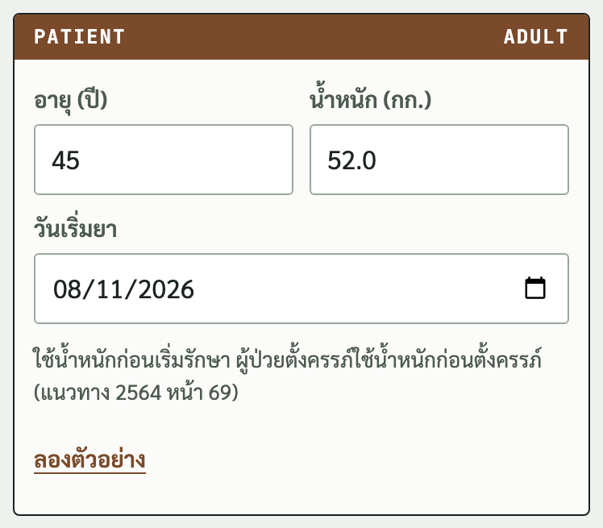
ใช้น้ำหนักก่อนเริ่มรักษา ทศนิยมได้ 1 ตำแหน่ง รับ 20.0 ถึง 200.0 กก. วันเริ่มยาตั้งเป็นวันนี้ไว้ให้ แก้ได้
กด ลองตัวอย่าง เพื่อดูผลของผู้ป่วยตัวอย่างอายุ 45 ปี น้ำหนัก 52 กก.
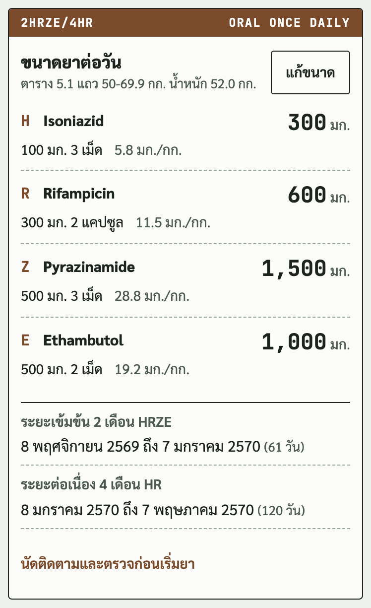
บรรทัดละตัวยา ตัวเลขใหญ่คือขนาดรวมต่อวัน ใต้ชื่อยาคือจำนวนเม็ดและ มก./กก.
บรรทัดใต้หัวข้อบอกว่าได้ขนาดจากแถวไหนของตาราง 5.1 เครื่องมือตัดแถวที่ 50 และ 70 กก. พอดี คือ 35 ถึง 49.9, 50 ถึง 69.9 และ 70 กก. ขึ้นไป น้ำหนักน้อยกว่า 35 กก. จอคำนวณตามน้ำหนัก
ระยะต่อเนื่อง 4 เดือนใช้ Isoniazid กับ Rifampicin ขนาดเดียวกับระยะเข้มข้น ช่วงวันที่ของแต่ละระยะอยู่ใต้ตาราง นับเดือนตามปฏิทิน
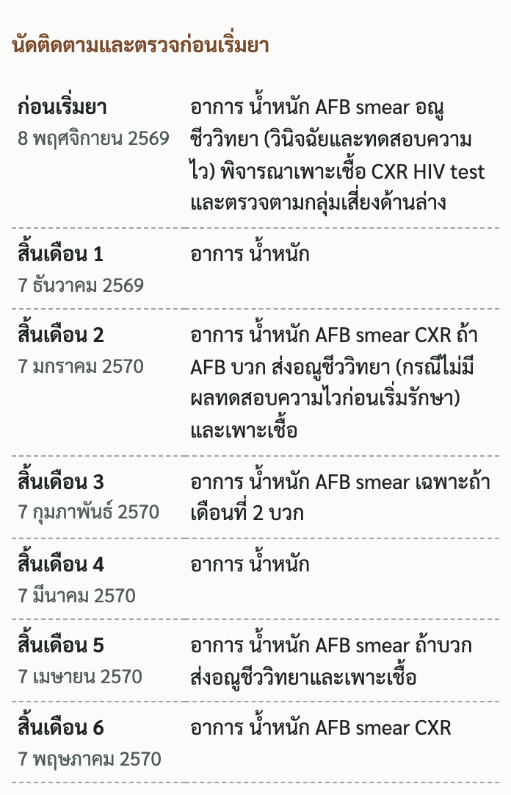
กดเปิดหัวข้อนี้ใต้ตารางขนาดยา จะเห็นสิ่งที่ต้องตรวจตอนเริ่มยาและสิ้นเดือนที่ 1 ถึง 6 พร้อมวันที่ ตามตาราง 5.3 หน้า 63 ถึง 64
ใต้ตารางนัดมีช่องติ๊กรายการตรวจก่อนเริ่มยาตามกลุ่มเสี่ยง ช่องติ๊กมีไว้ไล่ดูเท่านั้น ไม่ใส่ใน note
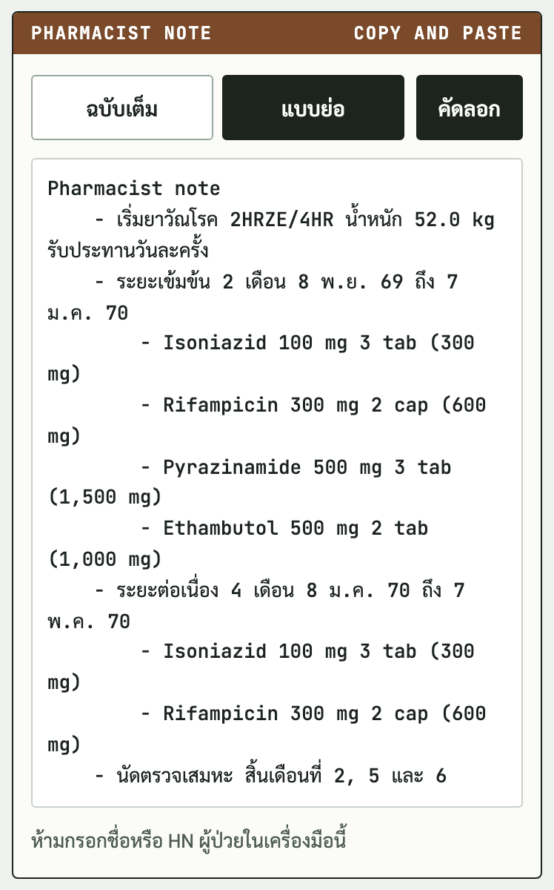
ฉบับเต็ม มี มก./กก. วันที่ของแต่ละระยะ และนัดตรวจสิ้นเดือนที่ 2, 5 และ 6
แบบย่อ มีชื่อยาเต็ม ขนาดเม็ด จำนวนเม็ด ขนาดรวม และช่วงวันที่ (ภาพนี้คือแบบย่อ)
เลือกแบบแล้วกดคัดลอก ข้อความใช้แค่อักษรอังกฤษกับไทย วางในบันทึกสหวิชาชีพแล้วไม่เพี้ยน
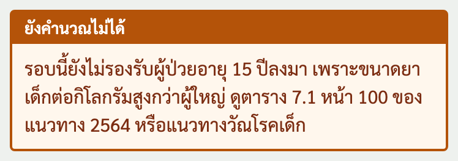
จอไม่แสดงขนาดยา เพราะขนาดยาเด็กต่อกิโลกรัมสูงกว่าผู้ใหญ่ ดูตาราง 7.1 หน้า 100 ของแนวทาง 2564 หรือแนวทางวัณโรคเด็ก
| ป้าย | ความหมาย |
|---|---|
| แดง | เกินขนาดสูงสุด H 300, R 600, Z 2,000, E 1,600 มก. |
| เหลือง | สูงกว่าช่วง มก./กก. ของแนวทาง (H 4-6, R 8-12, Z 20-30, E 15-20) |
| ฟ้า | ต่ำกว่าช่วง มก./กก. ของแนวทาง |
| ป้ายเล็ก | "ขนาดสูงสุด" ไม่ใช่คำเตือน บอกว่ายาเท่าขนาดสูงสุดแล้ว แม้ มก./กก. จะต่ำกว่าช่วงในคนน้ำหนักมาก |
ขนาดตามตาราง 5.1 ไม่ขึ้นเตือน แม้ มก./กก. บางตัวจะหลุดช่วง (เช่น Isoniazid 300 มก. ที่น้ำหนัก 35 กก. ได้ 8.6 มก./กก.) ยกเว้นกรณีป้ายฟ้าด้านล่าง ป้ายอื่นขึ้นเมื่อเภสัชแก้ขนาดเอง หรือเมื่อน้ำหนักน้อยกว่า 35 กก. แล้วเม็ดเต็มเข้าช่วงไม่ได้
แนวทางให้คิดตามน้ำหนักเมื่อเกิน 70 กก. ถ้า Ethambutol หรือ Pyrazinamide ตามตารางต่ำกว่าช่วง จอเสนอขนาดตามน้ำหนักเป็นปุ่ม "ใช้" กดแล้วเปลี่ยนทันที
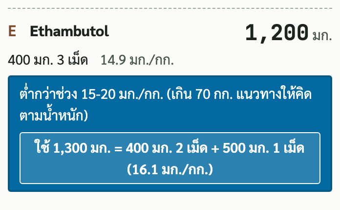
จอคำนวณตามน้ำหนักเป็นเม็ดเต็ม ถ้าเม็ดเต็มเข้าช่วงไม่ได้ จอเลือกขนาดที่ใกล้เป้าที่สุด (ห่างเท่ากันเลือกขนาดสูงกว่า) และมีปุ่ม "ใช้" ของอีกทางให้กด
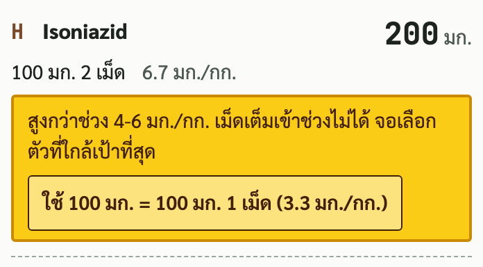
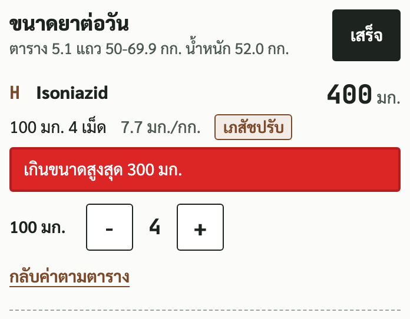
กด แก้ขนาด จะมีปุ่ม + กับ - ใต้ยาทุกตัว ปรับได้ทีละเม็ด (เม็ดเต็มเท่านั้น) กด เสร็จ เพื่อปิดช่องแก้
ยาที่แก้แล้วมีป้าย เภสัชปรับ และใน note มีวงเล็บ "(เภสัชปรับจากตาราง)" ต่อท้าย กด กลับค่าตามตาราง เพื่อยกเลิก ภาพนี้แก้ Isoniazid เป็น 4 เม็ด จึงขึ้นป้ายแดง
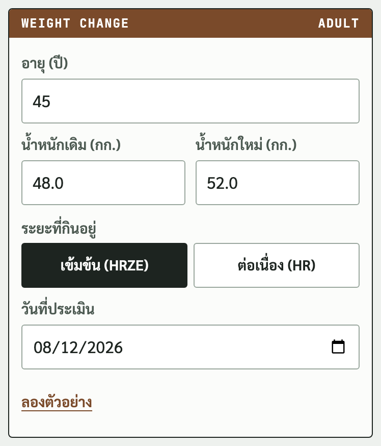
น้ำหนักเดิม คือน้ำหนักที่ใช้คิดขนาดยาที่ผู้ป่วยกินอยู่ เลือกระยะที่กินอยู่ เข้มข้น (HRZE) หรือ ต่อเนื่อง (HR) วันที่ประเมินใช้ลงใน note
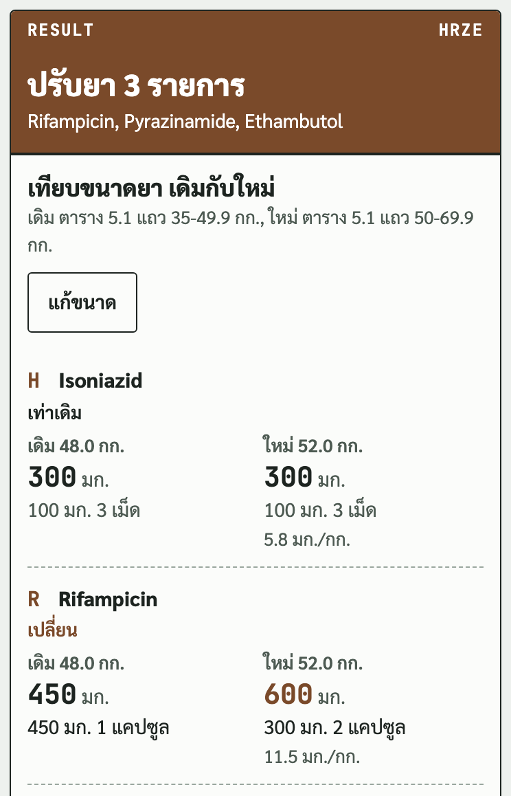
แถบบนบอก ปรับยา กี่รายการ ตารางเทียบขนาดเดิมกับขนาดใหม่คู่กันทีละตัว ตัวที่เปลี่ยนเขียนว่า เปลี่ยน ตัวที่ไม่เปลี่ยนเขียนว่า เท่าเดิม (ภาพนี้ 48 เป็น 52 กก. ปรับ 3 รายการ)
ถ้าขนาดเท่าเดิมทุกตัว แถบขึ้นว่า ไม่ต้องปรับยา
ตัวอย่าง 69 เป็น 71 กก. ระยะต่อเนื่อง ข้ามแถวตารางแต่ Isoniazid กับ Rifampicin เท่าเดิม
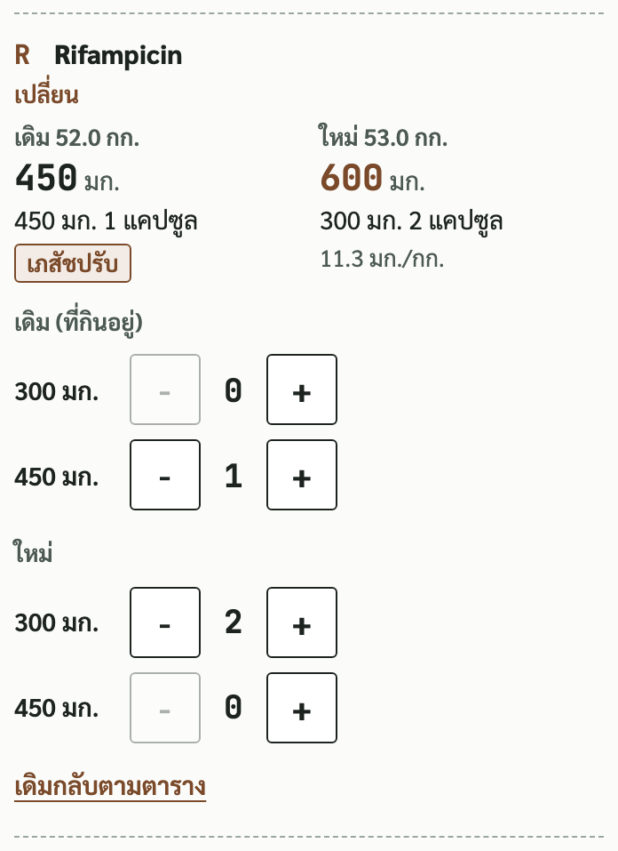
จอใส่ขนาดเดิมตามตารางของน้ำหนักเดิมไว้ให้ ถ้าผู้ป่วยกินขนาดที่หมอเคยปรับไว้ กด แก้ขนาด แล้วแก้ช่อง เดิม (ที่กินอยู่) ให้ตรงของจริง ผลและ note จะคิดจากขนาดที่แก้
ตัวอย่างในภาพ น้ำหนัก 52 เป็น 53 กก. ระยะต่อเนื่อง ผู้ป่วยกิน Rifampicin 450 มก. อยู่ แก้ช่องเดิมเป็น 450 มก. 1 แคปซูล ขนาดตามน้ำหนักใหม่คือ 600 มก. จอจึงขึ้นว่าปรับยา 1 รายการ
กด เดิมกลับตามตาราง หรือ ใหม่กลับตามตาราง เพื่อยกเลิกที่แก้
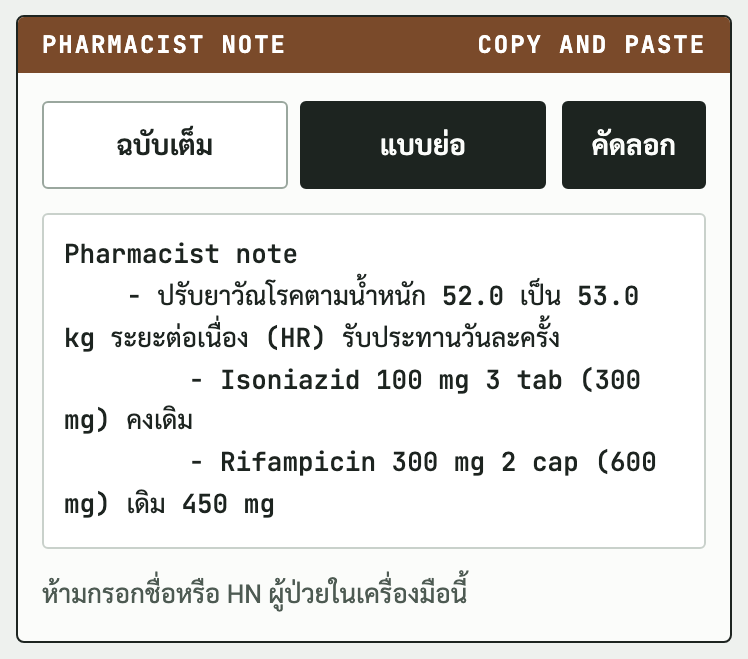
แบบย่อเรียงยาทุกตัวในระยะนั้น ตัวที่เปลี่ยนต่อท้ายด้วยขนาดเดิม (เช่น "เดิม 450 mg") ตัวที่ไม่เปลี่ยนต่อท้ายว่า "คงเดิม"
ฉบับเต็มมีน้ำหนักเดิมกับใหม่ แถวตารางที่ใช้ และขนาดเดิมเป็นขนาดใหม่ของตัวที่ปรับ
| กติกา | ที่มา |
|---|---|
| สูตรผู้ป่วยใหม่เชื้อไวต่อยา 2HRZE/4HR | แนวทาง 2564 หน้า 59 |
| 35 ถึง 49.9 กก. H 300 R 450 Z 1,000 E 800 มก. 50 ถึง 69.9 กก. H 300 R 600 Z 1,500 E 1,000 มก. 70 กก. ขึ้นไป H 300 R 600 Z 2,000 E 1,200 มก. | ตาราง 5.1 หน้า 60 ตัดแถวที่ 50 และ 70 กก. พอดี (ตารางเขียน 35-49, 50-69, มากกว่า 70) |
| น้อยกว่า 35 กก. คำนวณตามน้ำหนัก เป้า H 5 R 10 Z 25 E 15 มก./กก. เลือกเม็ดเต็มที่ใกล้เป้าที่สุดในช่วง | หมายเหตุตาราง 5.1, ช่วงในหัวตาราง, E 15 จากหน้า 62 |
| 70 กก. ขึ้นไป ถ้า E หรือ Z ต่ำกว่าช่วง เสนอขนาดตามน้ำหนัก | หมายเหตุตาราง 5.1 (เกิน 70 กก. คำนวณตามน้ำหนัก) |
| ขนาดสูงสุด H 300 R 600 มก. | ค่าสูงสุดในตาราง 5.1 |
| ขนาดสูงสุด Z 2,000 E 1,600 มก. | WHO operational handbook Module 4 DS-TB 2022 ภาคผนวก หน้า 50 (แนวทางไทยไม่ได้กำหนด) |
| นับเดือนตามปฏิทิน สิ้นเดือนที่ n = วันเริ่มยาบวก n เดือน ลบ 1 วัน | กติกาของเครื่องมือ (แนวทางไม่ได้นิยามเป็นจำนวนวัน) |
| นัดติดตามและตรวจก่อนเริ่มยา | ตาราง 5.3 หน้า 63 ถึง 64 |
ตาราง WHO 2022 ภาคผนวก หน้า 50 ให้ผู้ป่วยน้ำหนัก 65 กก. ขึ้นไปได้ Isoniazid 375 มก. และ Rifampicin 750 มก. และใช้ช่วง Ethambutol 15 ถึง 25 มก./กก. เครื่องมือนี้ใช้ตามแนวทางไทย คือ Isoniazid ไม่เกิน 300 Rifampicin ไม่เกิน 600 มก. และช่วง Ethambutol 15 ถึง 20 มก./กก.
TB Calculator เวอร์ชัน 1.0 พฤศจิกายน 2569 พัฒนาโดย DoseLogic
เครื่องมือนี้ช่วยเภสัชกรคิด ไม่ได้ตัดสินแทน ตรวจกับคำสั่งแพทย์และแนวทางของโรงพยาบาลทุกครั้ง